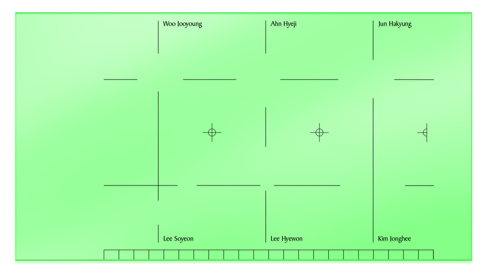
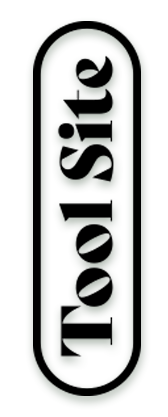

더배곳 학기말 발표 ⟨Tool Site⟩에서는 6명의 작업에서 반복적으로 등장하는 행위를 추출하고, 이를 엮어 만든 옴니버스 영상과 웹 기반 전시를 선보인다. 이미지를 다루는 개인의 고유한 방법론은 영상의 문법이 되어 운동성을 얻고, 함께 배포되는 웹사이트를 통해 기하학적인 상징으로 압축된다. 6개의 태도가 공존하는 ⟨Tool Site⟩ 속 서로를 참조하는 동시에 독립된 영역을 구축해나가는 이들을 만나보자.
영상 제작. 이혜원.
포스터 멋지음. 이소연.
소개 글. 전하경.
웹 제작. 우주영.
제작 관리. 안혜지.
참여 배우미들.
김종희, 안혜지, 우주영, 이소연, 이혜원, 전하경.
도움주신 분. 박찬신 | PaTI 더배곳 기둥.